import matplotlib.pyplot as plt
import seaborn as sns
import tifffile as tiff
import numpy as np
# some new ones
import skimage as sk
from scipy import stats
from scipy import ndimage
# something convenient for later
FIGSIZE21 = (10/2.54, 5/2.54)Workshop Python Image Analysis
Martijn Wehrens, May 2026
Estimated time: XX mins presenting + YY mins exercises
Chapter IIIB: Image Processing (part 2)
Two experiments
Tracking a kinase translocation reporter (KTR)
To assess the activity of kinases in single live cells, which can e.g. activate and deactivate proteins, researchers have developed kinase translocation reporters (KTRs). These are fluorescently tagged proteins (or protein domains) whose location inside the cell changes (translocates) depending on whether a specific kinase is active (see also figure 1 of Kudo et al.).
The paper Chavez-Abiega et al. presents an image analysis pipeline to analyze KTR signals from single cells (and uses it to study kinase behavior). We’ll use their data, and try to reproduce part of that analysis.
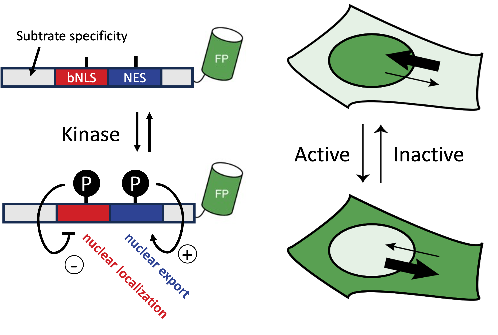
Diagram (left) and Fig 1b of Kudo et al. (right). When kinase activity is high, KTRs predominantly localize to the cytoplasm due to reduced nuclear localization signal and increased nuclear export signal, and vice versa.
Quantifying bacterial size
In the paper by Wehrens et al. the authors quantify how stressed E. coli become oddly long shaped, and moreover how, after stress receeded, they recover their familiar rod-shaped sizes.
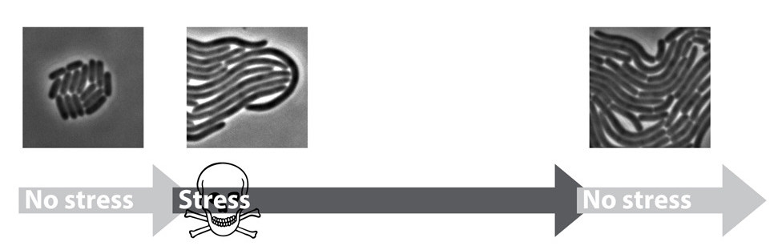
We’ll also try to reproduce (a very small part) of their analysis.
Loading the data
# Load part of the KTR data (Chavez-Abiega et al.)
img_path_KTR = '/Users/m.wehrens/Data_notbacked/2025_Py-Image-workshop_KTR-example-data/raw/Composite_KTR.tif'
img_nuclei = tiff.imread(img_path_KTR)[0, 0, 0:200, 0:200]
# Let's also load an image of some bacteria (Wehrens et al.)
path_img_ecoli = 'images/biological/microcolony_ecoli.tif'
img_ecoli = tiff.imread(path_img_ecoli)
# invert image
img_ecoli_inv = np.max(img_ecoli)-img_ecoli
# Display the images
fig, axs = plt.subplots(1,2, figsize=FIGSIZE21)
_ = axs[0].imshow(img_nuclei, cmap='magma')
_ = axs[0].axis('off')
_ = axs[1].imshow(img_ecoli, cmap='gray')
_ = axs[1].axis('off')
plt.show()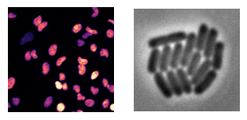
Segmentation
- We aim to quantify
- nuclear vs. cytoplasmic signal in the KTR dataset,
- and bacterial sizes the bacterial dataset.
- To achieve both, we first need to segment both nuclei and bacteria.
- A manual threshold is labor intensive (and subjective).
- Aim for automatic solution.
Different types of challenges
- Generally, the segmentation approach depends on type of data.
- Global thresholds are based on statistics visualized well by histograms.
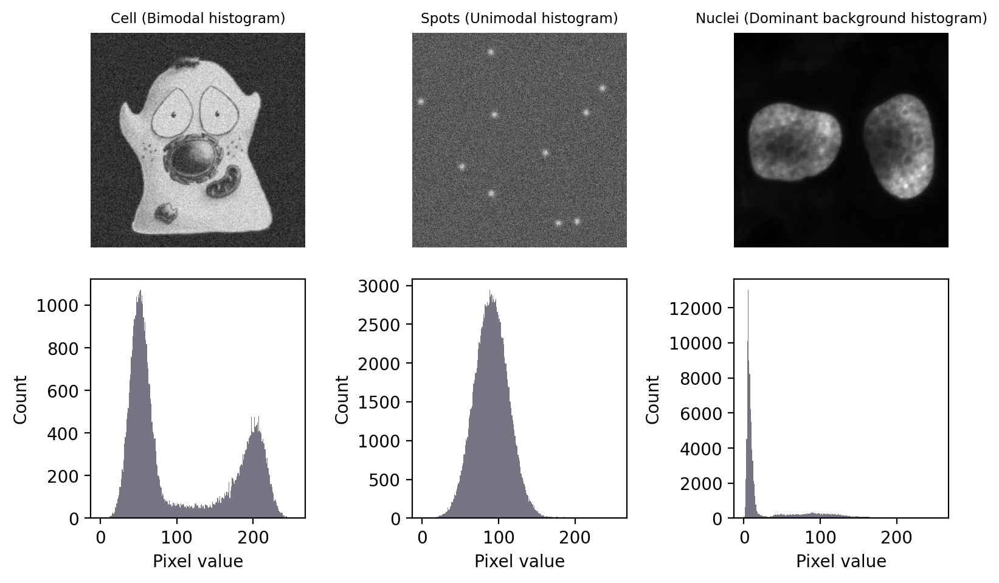
Image taken from biobook (fig. 68), Creative Commons Attribution 4.0 International License.
Code
img_page = tiff.imread("images/misc/page_original.tif")
fig, axs = plt.subplots(1,2, figsize=(15/2.54, 6/2.54))
_ = axs[0].set_title(f"Text\n(absolute values change)")
_ = axs[0].imshow(img_page, cmap='gray')
_ = axs[0].axis('off')
_ = axs[1].hist(img_page.ravel(), bins=256)
_ = axs[1].set_xlabel("Pixel value"); _ = axs[1].set_ylabel("Count")
plt.tight_layout()
plt.show()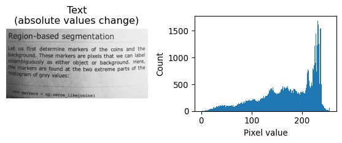
Each of the images above require a different strategy.
- The bimodal histogram
- Statistics both peaks can be used
- Find good divide between the two peaks
- The unimodal histogram
- The spots don’t fall outside background distribution
- Only spatial relationship reveals ROI
- Direct application global threshold useless
- Dominant background
- Statistic of background accessible
- Estimate above-background cutoff
- Changing absolute values
- Background and foreground values not absolute
- Histogram doesn’t work well
- Use local contrast
Automated global thresholds
Several algorithms exist, to determine a global threshold that can be applied to the image.
The bimodal histogram
One algorithm that works well is Otsu’s method. It will try to find a threshold that minimizes the variance in the intensities that respectively fall above and below that threshold. (For more info, see biobook.)
# Illustrate bimodal + otsu
# Load
img_happycell = tiff.imread("images/bioimagebook/happy_cell_noise.tif")
# Inspect
_ = plt.imshow(img_happycell, cmap='grey')
plt.show()
_ = plt.hist(img_happycell.ravel(), bins=256)
plt.show()
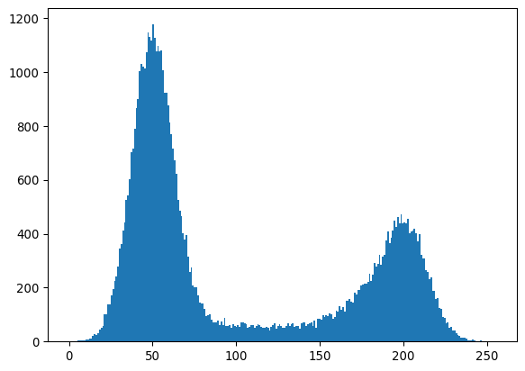
“Happy cell” image source, Creative Commons Attribution 4.0 International License.
# Determine otsu threshold
thresh_otsu = sk.filters.threshold_otsu(img_happycell)
# Inspect
_ = plt.hist(img_happycell.ravel(), bins=256)
_ = plt.axvline(thresh_otsu, color='red')
plt.show()
_ = plt.imshow(img_happycell>thresh_otsu, cmap='grey')
plt.show()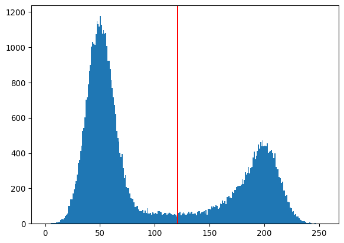
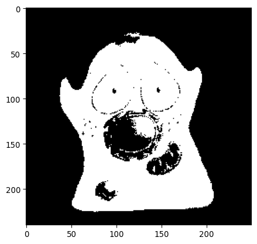
The dominant background
A method that’s suitable for the “dominant background” case is the “triangle method”, which was published already by Zack et al. in 1977.
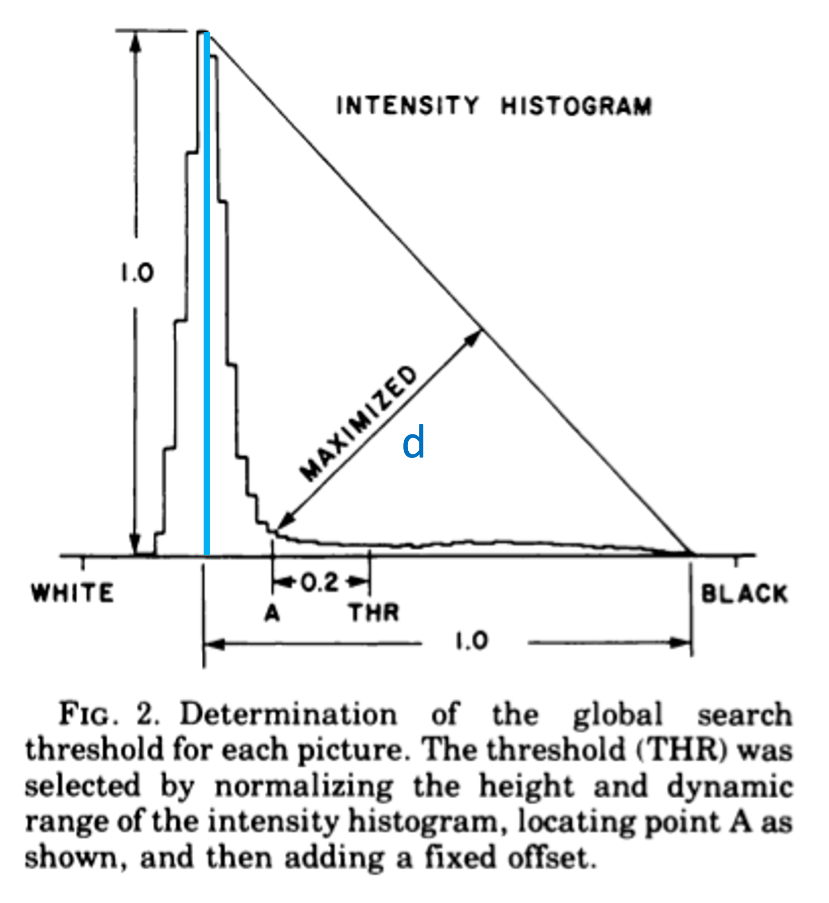
In the figure above (from Zack et al.), the method is explained. A line is drawn in the histogram between \(x_\text{mode}, y(x_\text{mode})\) and \(x_\text{max}, 0\). Then, a second line is drawn, perpendicular to the first line, which maximizes the distance to the histogram line. The x-value where that second line touches the histogram, will be the threshold. (Originally, a margin of 0.2 was included, but modern implementations leave that out.)
# Let's check some data that has a dominant background
_ = plt.imshow(img_nuclei)
plt.show()
_ = plt.hist(img_nuclei.ravel(), bins=256)
plt.show()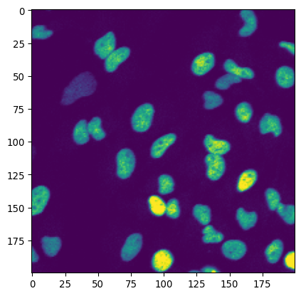
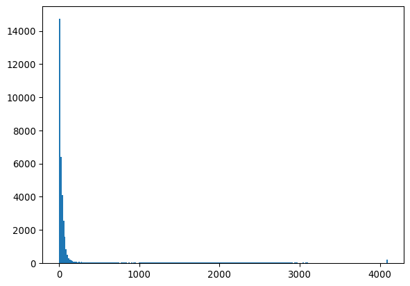
# and apply the triangle method
thresh_triangle = sk.filters.threshold_triangle(img_nuclei)
_ = plt.hist(img_nuclei.ravel(), bins=256)
_ = plt.axvline(thresh_triangle, color='red')
plt.show()
_ = plt.imshow(img_nuclei>thresh_triangle)
plt.show()
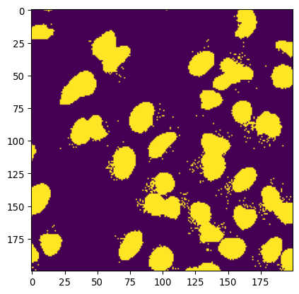
More thresholding-finding algorithms
More global thresholding-finding algorithms exits. Threshold methods included in skimage.filters are:
threshold_isodata()
threshold_li()
threshold_mean()
threshold_minimum()
threshold_multiotsu()
threshold_niblack()
threshold_otsu()
threshold_sauvola()
threshold_triangle()
threshold_yen()See the documentation for documentation on these function. See this guide for more information on thresholding.
Local thresholding
If there is a contrast that is local (e.g. due to uneven illumination), local thresholding can be very useful.
This can be done with the function threshold_local().
# Let's use the page as an example
img_page = tiff.imread("images/misc/page_original.tif")
img_page_inv = np.max(img_page)-img_page
thresh_local = sk.filters.threshold_local(img_page_inv, block_size=35, offset=-10)
# block size is the size of the neighborhood
# offset is the local contrast (is subtracted to create threshold)
#
# NOT FOR PRESENTATION (technical note for reference)
# - this function works by convolution
# - either method = gaussian, mean or median kernel of neighborhood
# - the convoluted value IS the threshold
# - offset parameter adjusts the cutoff
# https://scikit-image.org/docs/stable/api/skimage.filters.html#skimage.filters.threshold_local
_ = plt.imshow(img_page_inv>thresh_local, cmap='gray')
plt.show()
# Note that the image should be inverted to get correct foreground/background
# Note that the offset parameter is subtracted from preliminary threshold, therefor -10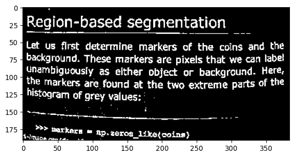
Applying automatic thresholding
The classic approaches above work well for the nuclei. For the bacteria it works less well. Let’s try it.
# Little plotting function
def plot_sidebyside(img1, img2, mycmap1 = 'gray', mycmap2 = 'viridis'):
fig, axs = plt.subplots(1,2, figsize=FIGSIZE21)
_ = axs[0].imshow(img1, cmap=mycmap1)
_ = axs[1].imshow(img2, cmap=mycmap2)
plt.tight_layout()
return fig# Let's try some of these thresholding approaches
# The Otsu method
mask_ecoli_otsu = img_ecoli_inv > sk.filters.threshold_otsu(img_ecoli_inv)
fig = plot_sidebyside(img_ecoli_inv, mask_ecoli_otsu)
# (Technical note: in jupyter, any open figure, ie without plt.close()
# before end cell, will be shown)
# The Triangle method
mask_ecoli_triangle = img_ecoli_inv > sk.filters.threshold_triangle(img_ecoli_inv)
fig = plot_sidebyside(img_ecoli_inv, mask_ecoli_triangle)
# Challenges:
# non-uniform foreground/background intensity
# low contrast boundaries 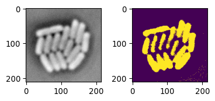
The result is not horrible. However, due to the intensity of ‘bacteria pixels’ not being uniform, the mask shows different results depending on the image location. In addition, due to some boundaries having low or different contrasts, some bacteria are not separated well.
# Applying local thresholding
mask_ecoli_local = img_ecoli_inv > sk.filters.threshold_local(img_ecoli_inv, block_size=35, offset=-10)
fig = plot_sidebyside(img_ecoli_inv, mask_ecoli_local)
# Looks good
# But improvement needed
# Look at additional options
This is actually a pretty good starting point. Let’s look into additional functions that could improve this.
Morphological operations
Neighborhoods and convolutions
We saw that we need to process each pixel with respect to its ‘local neighborhood’. Let’s look at a general ways of local image processing, which are fundamental in image processing, and applied from (under the hood of) sk.filters.threshold_local() to machine learning approaches.
Convolution
Let’s dive into convolutions.
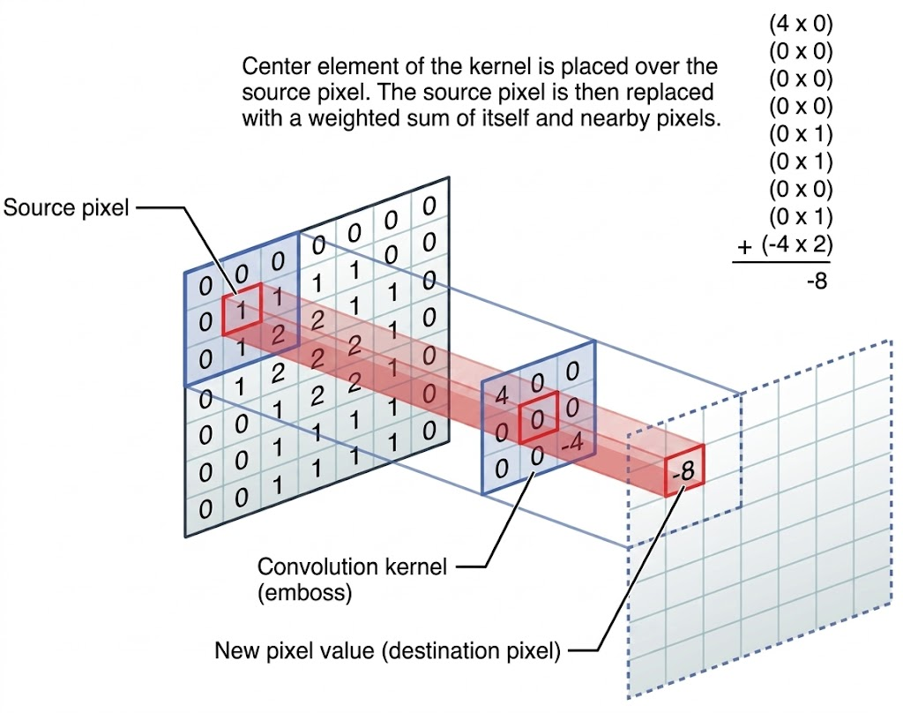
Image via discuss.pytorch.org. In convolution, a new image is created by for each pixel summing its neighborhood pixels multiplied with neighborhood location specific weights, as specified by the convolution kernel.
# Let's illustrate this concept with some examples
# Load an example picture
img_pika = tiff.imread('images/misc/pikachu.tif')
_= plt.imshow(img_pika)
_= plt.colorbar()
# Define a horizontal line "kernel"
kernel_h = np.zeros((25,25))
kernel_h[12,:] = 1
kernel_h=kernel_h/np.sum(kernel_h)
plt.imshow(kernel_h)
# Define a vertical line "kernel"
kernel_v = np.zeros((25,25))
kernel_v[:,12] = 1
kernel_v=kernel_v/np.sum(kernel_v)
plt.imshow(kernel_v)
# Apply them both to the image
img_pika_h = ndimage.convolve(img_pika, kernel_h)
img_pika_v = ndimage.convolve(img_pika, kernel_v)
# Now show both pictures
plot_sidebyside(img_pika_h, img_pika_v, mycmap1='magma', mycmap2='magma')
# Can you see what happened?
# shapes
# intensities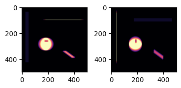
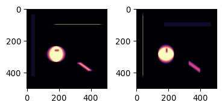
Do you understand why the results looks like it does? Both how the shapes have changed, and also how the intensities have changed?
Two more kernels, blur and edge
# An additional convenience
def plot_sidebyside_samecmap(img1, img2, mycmap='viridis'):
return plot_sidebyside(img1, img2, mycmap1=mycmap, mycmap2=mycmap)# Define a disk kernel
kernel_disk = sk.morphology.disk(15)
kernel_disk = kernel_disk/np.sum(kernel_disk)
_ = plt.imshow(kernel_disk)
# Define an edge kernel
kernel_laplacian = np.array(
[[0, -1, 0],
[-1, 4, -1],
[0, -1, 0]])
# Now apply and plot
img_pika_disk = ndimage.convolve(img_pika.astype(np.float32), kernel_disk.astype(np.float32))
img_pika_edge = ndimage.convolve(img_pika.astype(np.float32), kernel_laplacian.astype(np.float32))
minmaxval1 = np.max(np.abs(img_pika_disk))
_ = plt.imshow(img_pika_disk, cmap='seismic', vmin=-minmaxval1, vmax=minmaxval1)
minmaxval2 = np.max(np.abs(img_pika_edge))
_ = plt.imshow(img_pika_edge, cmap='seismic', vmin=-minmaxval2, vmax=minmaxval2)
# What happened here? Explain?
# Blur, why? (smoothing = averaging over neighborhood)
# Edge, why? (edge = derivative, see image below)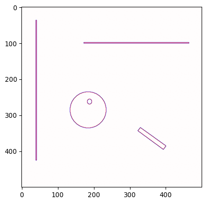
Can you explain what happened here?
Answer: The first kernel, averages over a local neighborhood, which results in blurring. The second kernel, if you would work it out, takes the second derivative. This is illustrated by the graph below:
Code
kernel_1d_deriv = np.array([1, -1])
kernel_1d_laplac = np.array([1, -2, 1])
# from scipy.signal import convolve
# convolve(kernel_1d_deriv, kernel_1d_deriv)
# # returns:
# # array([ 1, -2, 1])
# # Technical note: ndimage.convolve doesn't handle boundaries etc in the right
# # way such that ndimage.convolve(kernel_1d_deriv, kernel_1d_deriv) returns
# # another result.
example_ramp = np.concatenate( (np.zeros(10),
np.array([1, 1, 2, 5, 15, 25, 35, 45, 48, 49, 49]),
np.ones(10)*50))
example_ramp_deriv = ndimage.convolve(example_ramp, kernel_1d_deriv)
example_ramp_derivderiv = ndimage.convolve(example_ramp, kernel_1d_laplac)
fig, axs = plt.subplots(1, 3, figsize=(15/2.54, 5/2.54))
_ = axs[0].plot(np.arange(len(example_ramp)), example_ramp)
_ = axs[0].set_xlabel('x'); _ = axs[0].set_ylabel(f'y(x)')
_ = axs[1].plot(np.arange(len(example_ramp)), example_ramp_deriv)
_ = axs[1].set_xlabel('x'); _ = axs[1].set_ylabel(f'y\'(x)')
_ = axs[2].plot(np.arange(len(example_ramp)), example_ramp_derivderiv)
_ = axs[2].set_xlabel('x'); _ = axs[2].set_ylabel(f'y\'\'(x)')
plt.tight_layout()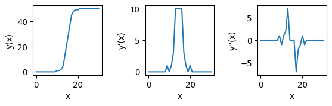
The second kernel is a bit tougher to understand, but it amounts to taking the second derivative. In this case, similar to taking the derivative twice for a line \(y(x)\) as in the picture above, pixels with a value close to zero constitute edges.
Technical note
Both the derivative and laplacian kernel can be used to find edges. The advantage of the Laplacian is that it better identifies the exact location of the edge, as the zero-crossing (pixels with values close to zero) are precisely where the edge is. First-order derivatives can also be used, but they are dimension-specific (either the derivative in the row-direction, or the derivative in the column-direction), so the output of two convolutions needs to be combined. Additionally, both can be sensitive to noise, why they are often combined with a de-noising convolution (e.g. blur), as we will see below.
Dilution and erosion
- We can go a step further
- Dilation and erosion are very useful operations
# Dilution and erosion
# Let's try
img_pika_eroded = sk.morphology.erosion(img_pika, footprint=np.ones((7,7)))
img_pika_dilated = sk.morphology.dilation(img_pika, footprint=np.ones((7,7)))
# Show
_ = plot_sidebyside_samecmap(img_pika_eroded, img_pika_dilated)
# Dilution = convolution, max val taken (or: any one --> one)
# Erosion = convolution, min val taken (or: any zero --> zero)
During erosion, similar to convolution, a disk or square shaped mask slides over the image, and for each pixel, the minimum value in the neighborhood is taken.
During dilation, similar to convolution, a disk or square shaped mask slides over the image, and for each pixel, the maximum value in the neighborhood is taken.
These operations are also commonly applied to binary images.
# They can also be combined
# Morphological closing (dilation followed by erosion)
img_pika_closed = sk.morphology.closing(img_pika, footprint=sk.morphology.disk(7))
# Morphological opening (erosion followed by dilation)
img_pika_opened = sk.morphology.opening(img_pika, footprint=sk.morphology.disk(7))
# Show the result
_ = plot_sidebyside_samecmap(img_pika_closed, img_pika_opened)
# Blurring can also be done more sophisticated
img_pika_gauss07 = sk.filters.gaussian(img_pika, sigma=7)
img_pika_gauss20 = sk.filters.gaussian(img_pika, sigma=20)
# Now show both
_ = plot_sidebyside_samecmap(img_pika_gauss07, img_pika_gauss20)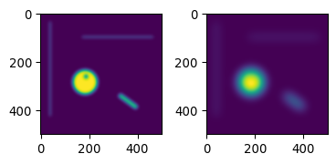
Built-in edge detection methods
As mentioned previously, built-in edge detection methods exist, common ones include: sk.filters.sobel(), sk.filters.prewitt(), sk.filters.laplace(), sk.feature.canny(). See also the documentation.
# Let's try sobel
img_edges = sk.filters.sobel(img_ecoli_inv)
_ = plt.imshow(img_edges)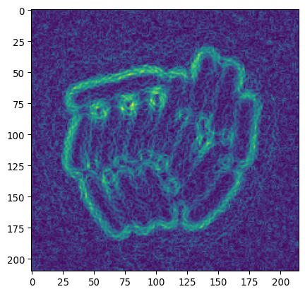
# (optional)
# Slightly more advanced sobel
# do some pre-processing.
# equilize image contrast
img_eq = sk.exposure.equalize_adapthist(img_ecoli_inv)
# uses "CLAHE"
# tiles images & improves contrast based on tile-histogram
# (see https://www.mathworks.com/help/images/ref/adapthisteq.html)
# (see https://imagej.net/plugins/clahe)
# blur to remove noise
img_eq_blur = sk.filters.gaussian(img_eq, sigma=1.5)
# now do sobel
img_sob_enh = sk.filters.sobel(img_eq_blur)
# apply otsu
img_edges2 = img_sob_enh > sk.filters.threshold_otsu(img_sob_enh)
# show result
_ = plot_sidebyside_samecmap(img_sob_enh, img_edges2)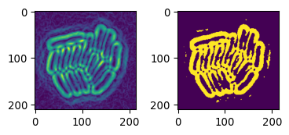
Many of these functions will, under the hood, apply some combination of derivative and smoothing operations.
Combining everything
Laplacian + Gauss
# Now these can also be combined
# E.g. bacterial segmentation
# we're interested in local edge detection
# Apply of LoG on the bacteria
img_ecoli_gauss = sk.filters.gaussian(img_ecoli_inv, sigma=3)
edges_log = sk.filters.laplace(img_ecoli_gauss)
# show both
_ = plt.title("After Gauss")
_ = plt.imshow(img_ecoli_gauss)
minmaxval = np.max(np.abs(edges_log))
_ = plt.title("After Gauss & Laplacian")
_ = plt.imshow(edges_log, cmap='seismic', vmin=-minmaxval, vmax=minmaxval)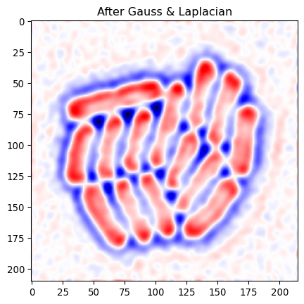
As we saw above, edges correspond to values going from positive, through zero, to negative. So we can look for places where negative and positive values are close.
# Now identify edge pixels
# where value goes positive->negative (or vice versa)
# ie positive and negative value close
# per pixel, what's lowest and highest neighbor
edges_min = ndimage.minimum_filter(edges_log, footprint=sk.morphology.disk(1))
edges_pos = ndimage.maximum_filter(edges_log, footprint=sk.morphology.disk(1))
# do we find both positive & negative close?
img_edges = np.logical_and(edges_min < 0, edges_pos >0)
plt.imshow(img_edges)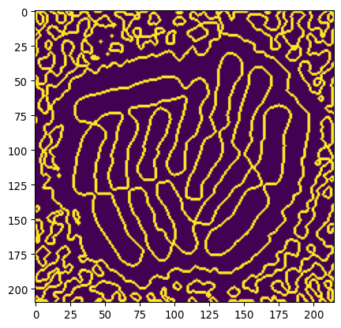
Let’s remove lines due to background noise by using our previous masks to select the colony.
# Remove artifacts
# Use previous thresholded image
# Make whole-colony mask
_ = plt.title("Previous triangle mask")
_ = plt.imshow(mask_ecoli_triangle)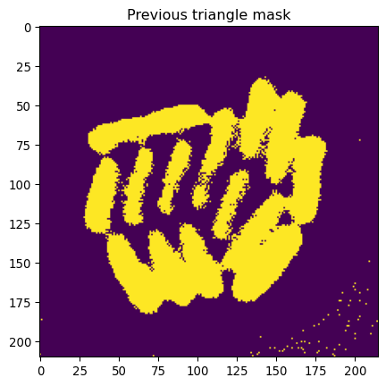
# Modify this mask
# Remove small parts
mask_ecoli_triangle_filtered = sk.morphology.remove_small_objects(mask_ecoli_triangle, min_size=50)
# Enlarge it
mask_ecoli_triangle_filtered = sk.morphology.dilation(mask_ecoli_triangle_filtered, footprint=sk.morphology.disk(8))
_ = plt.title("Whole-colony mask (based triangle)")
_ = plt.imshow(mask_ecoli_triangle_filtered)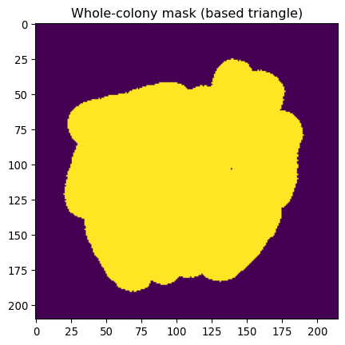
# Combine both
img_edges_foreground = np.logical_and(img_edges, mask_ecoli_triangle_filtered)
_ = plt.title("Edges (colony selected)")
_ = plt.imshow(img_edges_foreground)
# And fill outlines
img_edges_filled = ndimage.binary_fill_holes(img_edges_foreground)
_ = plt.title("Segmented bacteria (v1)")
_ = plt.imshow(img_edges_filled)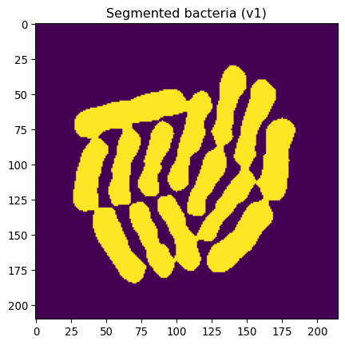
This looks pretty great, except that some bacteria are still “stuck together”.
Let’s at least identify separate bacteria.
# Let's erode this by 4 px
# (Aim: get indivdual bacterial locations)
mask_ecoli_log_eroded = sk.morphology.erosion(img_edges_filled, footprint=sk.morphology.disk(4))
# Show
_ = plt.imshow(mask_ecoli_log_eroded, cmap='gray')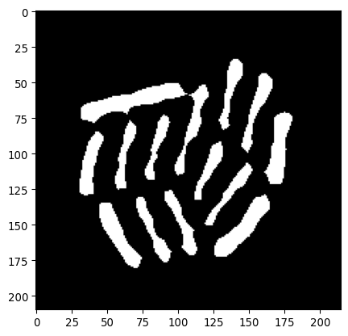
# And label
mask_bacteria_slim_labeled = sk.measure.label(mask_ecoli_log_eroded)
_ = plt.imshow(mask_bacteria_slim_labeled, cmap='tab20')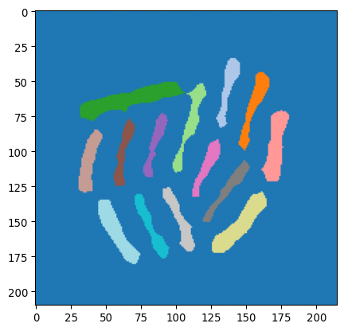
Watershed
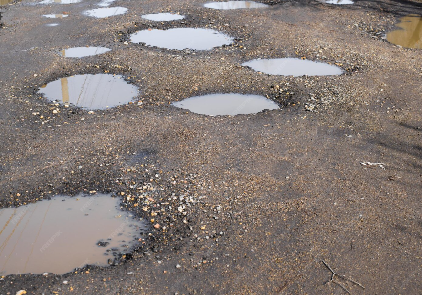
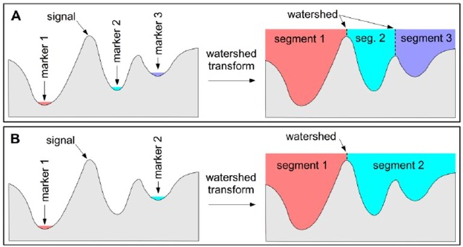
(Pictures via user24124133 and researchgate.) Watershed is a common algorithm to segment touching objects. It is inspired by how water would fill up a landscape. From specific seeds, the water level rises, and once separate regions touch, boundaries are established.
# Apply to separate bacteria
# Using mask_ecoli_log
# mask_bacteria_slim_labeled as seeds
mask_bacteria_combined = sk.segmentation.watershed(-1*img_edges_filled, markers=mask_bacteria_slim_labeled, mask=img_edges_filled)
# Show the result
_ = plt.imshow(mask_bacteria_combined, cmap='viridis')
# Polish the final image a little bit
# Let's get regionprops from mask_bacteria_combined
props = sk.measure.regionprops(mask_bacteria_combined)
# Plot it
fig, ax = plt.subplots(1,1, figsize=(9/2.54,9/2.54))
_ = ax.imshow(img_ecoli, cmap='gray')
# slightly shaded region
# plt.imshow(mask_bacteria_combined, cmap='jet', alpha= .3*(mask_bacteria_combined>0))
# project numbered labels on top
for x,y,lbl in [(p.centroid[1], p.centroid[0], p.label) for p in props]:
# centered text
ax.text(x, y, str(lbl), color='white', fontsize=9, ha='center', va='center')
# specific bacterial outline
ax.contour(mask_bacteria_combined==lbl, colors='red', linewidths=0.5)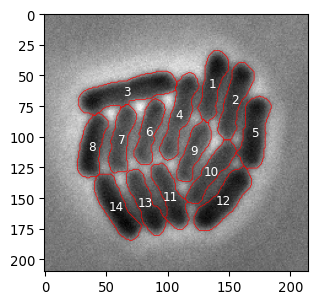
Exercises
- Write a function to segment a picture of nuclei, e.g.
seg_nuclei(input_img).- Test that it works.
- Write a function that segments a picture of bacteria, e.g.
seg_bacterium(input_img).- Test that it works.
- Remember that pixels were 0.041 um wide. An average bacterium is ~1-2 μm long and .5-1 μm wide. Are bacterial sizes we observe consistent with this?
Additional exercises
- Create a local mean convolution kernel.
- Apply it to the image
images/bioimagebook/spots.tif. - Can you device a segmentation algorithm for spots based on this new image?
- Make a plot with contours
- Count the spots
- Apply it to the image
- Load the image
chatGPT_shadybusiness_licensehigh-8bit.tif.- Try to segment the symbols on the license plate.
- Use
regionpropsandbboxto plot each symbol separately.
- Look up what a ‘distance transform’ is (
scipy.ndimage.distance_transform_edt) and apply it to the nuclei image.- Create a mask based on thresholding the distance transform.
- To achieve this, use the function
sk.feature.peak_local_max().
- To achieve this, use the function
- An issue is that some nuclei are close, and won’t be separated by the segmentation mask. Could the distance transform information help? Are there other approaches?
- Create a mask based on thresholding the distance transform.